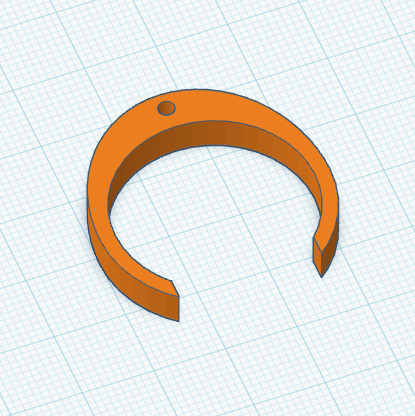

Hub Lock
Låser huben på rørinspeksjonskamera.
Vekt: ca 25g
Last ned STL
Lisens: Filene er gratis for personlig bruk. Kommersiell
bruk, videresalg eller modifikasjon for salg er ikke tillatt med mindre
filene er vesentlig transformert. Forslag til lisens: Creative Commons
Attribution-NonCommercial-NoDerivatives (CC BY-NC-ND).